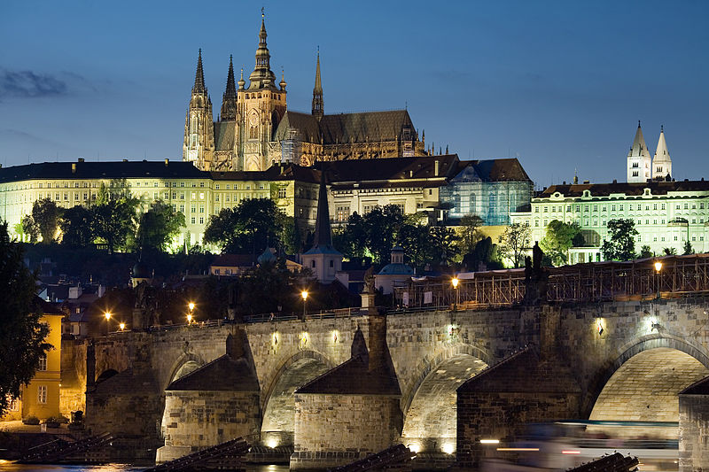

The 4th Virtual Machine Meetup (VMM '17) is a venue for discussing the latest research and developments in the area of managed language execution. It will be held September 27-29 at the School of Computer Science, Faculty of Mathematics and Physics, Charles University, Prague, Czech Republic and is co-located with the Managed Languages & Runtimes Conference 2017. We welcome presentations of new research results, experience reports, as well as position statements that can lead to interesting discussions.
Topics include, but are not limited to:
To participate, please email thomas.wuerthinger@oracle.com stating your wish to attend, and your name and affiliation as you wish to have them on your name badge. There are limited participant slots due to the constraints of the room, so please register early, and by September 15th the latest.
If you would like to give a presentation, please submit a presentation abstract (a title with max. 100 characters and an abstract with max. 400 characters) to https://ssw.jku.at/VMM17. We may ask for additional information from you before making the program decision. Presentation slots are either 30 minutes (long) or 15 minutes (short) including Q/A.
Important dates:
Submission link: https://ssw.jku.at/VMM17
Program committee:

copyright Jorge Royan / http://www.royan.com.ar / CC BY-SA 3.0
{kind=link}